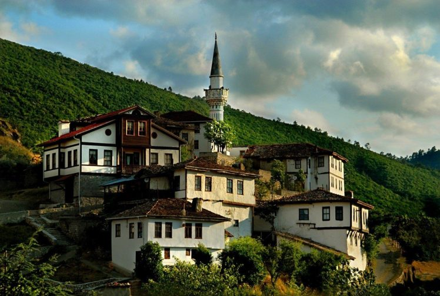
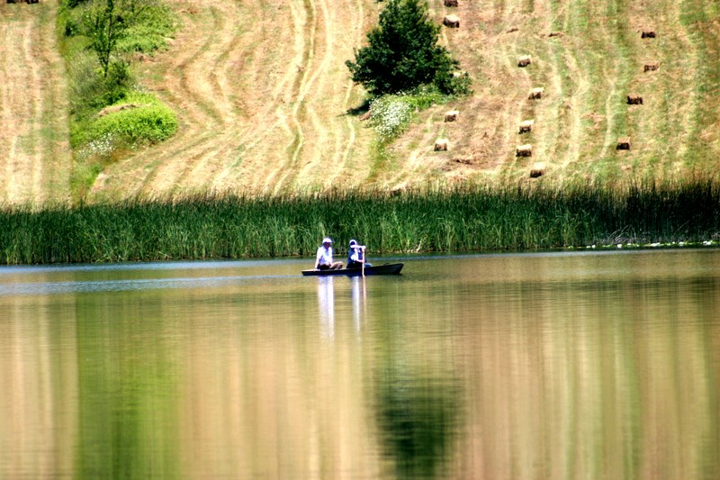

<!DOCTYPE html>

<html>

<meta charset="UTF-8">
<meta name="viewport" content="width=device-width, initial-scale=1">
<title>Yusuf Sönmez</title>

<link rel="stylesheet" href="https://stackpath.bootstrapcdn.com/bootstrap/4.4.1/css/bootstrap.min.css" integrity="sha384-Vkoo8x4CGsO3+Hhxv8T/Q5PaXtkKtu6ug5TOeNV6gBiFeWPGFN9MuhOf23Q9Ifjh" crossorigin="anonymous">


<link rel="stylesheet" href="CSS/proje_sehrim.css">
<link rel="stylesheet" href="CSS/stil.css">

<script src="https://kit.fontawesome.com/d400023c88.js" crossorigin="anonymous"></script>

<script src="https://code.jquery.com/jquery-3.4.1.slim.min.js" integrity="sha384-J6qa4849blE2+poT4WnyKhv5vZF5SrPo0iEjwBvKU7imGFAV0wwj1yYfoRSJoZ+n" crossorigin="anonymous"></script>
<script src="https://cdn.jsdelivr.net/npm/popper.js@1.16.0/dist/umd/popper.min.js" integrity="sha384-Q6E9RHvbIyZFJoft+2mJbHaEWldlvI9IOYy5n3zV9zzTtmI3UksdQRVvoxMfooAo" crossorigin="anonymous"></script>
<script src="https://stackpath.bootstrapcdn.com/bootstrap/4.4.1/js/bootstrap.min.js" integrity="sha384-wfSDF2E50Y2D1uUdj0O3uMBJnjuUD4Ih7YwaYd1iqfktj0Uod8GCExl3Og8ifwB6" crossorigin="anonymous"></script>

</html>

<body>
    
    <div class="logo">
        <i class="fas fa-balance-scale"></i>
    </div>
    <header>  
      <div class="nav-bar">

          <nav class="navbar navbar-expand-lg navbar-light bg-light">
              <a class="navbar-brand" href="#">Sonmez</a>
              <button class="navbar-toggler" type="button" data-toggle="collapse" data-target="#navbarSupportedContent" aria-controls="navbarSupportedContent" aria-expanded="false" aria-label="Toggle navigation">
                <span class="navbar-toggler-icon"></span>
              </button>
            
              <div class="collapse navbar-collapse" id="navbarSupportedContent">
                <ul class="navbar-nav mr-auto">
                  <li class="nav-item active">
                    <a class="nav-link" href="proje_hakkinda.html">Hakkımda <span class="sr-only">(current)</span></a>
                  </li>
                  <li class="nav-item">
                    <a class="nav-link" href="proje_ozgecmis.html">Özgeçmiş</a>
                  </li>
                  <li class="nav-item">
                      <a class="nav-link" href="proje_sehrim.html">Şehrim</a>
                    </li>
                    <li class="nav-item">
                      <a class="nav-link" href="proje_mirasimiz.html">Mirasımız</a>
                    </li>
                    <li class="nav-item">
                      <a class="nav-link" href="proje_iletisim.html">İletişim</a>
                    </li>
                    <li class="nav-item">
                      <a class="nav-link" href="proje_login.html">Login</a>
                    </li>
                  
                </ul>
              </div>
            </nav>

      </div>
      
  </header>
<div class="container" >
    <div id="carouselExampleFade" class="carousel slide carousel-fade" data-ride="carousel">
        <div class="carousel-inner">
          <div class="carousel-item active">
            
          </div>
          <div class="carousel-item">
            
          </div>
          <div class="carousel-item">
            
          </div>
          <div class="carousel-item">
            
          </div>
          <div class="carousel-item">
            
          </div>
          <div class="carousel-item">
            
          </div>
          <div class="carousel-item">
            
          </div>
          <div class="carousel-item">
            
          </div>
          <div class="carousel-item">
            
          </div>
          <div class="carousel-item">
            
          </div>
        </div>
        <a class="carousel-control-prev" href="#carouselExampleFade" role="button" data-slide="prev">
          <span class="carousel-control-prev-icon" aria-hidden="true"></span>
          <span class="sr-only">Previous</span>
        </a>
        <a class="carousel-control-next" href="#carouselExampleFade" role="button" data-slide="next">
          <span class="carousel-control-next-icon" aria-hidden="true"></span>
          <span class="sr-only">Next</span>
        </a>
    </div>
    <script>
        $('.carousel').carousel({
            interval: 2000
            .carousel('pause')
})
    </script>
</div>
<div class="yazi">
    <h1>Sakarya</h1>
    <ul>
        <li>
            <p>
                Sakarya ili konumu itibari ile ilgi odağı olan bir şehirdir. Kocaeli ve İstanbul'a yakın konumu ile iş dünyasına, 
            Bolu ve Düzce gibi illerimizle de doğal güzelliklere yakın bir yerdedir. Sakarya'da benzersiz doğal güzelliklere sahiptir tabiki.
            Yukarıdaki resimlerde de görebileceğiniz gibi yapısal alanda ve doğal güzelliklerde benzersiz şaheserlere sahiptir.
            </p>
        </li>
        <li>
            NÜFUSU : 1,03 Milyon
        </li>
        <h2>Taraklı evleri</h2>
        <li>    
            <p>
                Taraklı Evleri, uzun yıllar ayakta kalabilmiştir. Üstelik yemyeşil bir doğanın içinde yer almaktadır.
                Hıdırlık Tepesi ve Taraklı Hisarının yamaçları ile bu iki tepe arasındaki vadide kurulu,
                Taraklı’ya, Göynük cihetinden gelen dere de ayrı bir güzellik katmaktadır.
                Tarihi evlerin bazıları 3 asrın üzerindedir.
                 Bu evlerin genel karakteristiği Osmanlı şehir dokusunu oluşturan üç katlı ev biçimidir
            </p>
        </li>
        <h2>II. Bayazid Köprüsü</h2>
        <li>
            <p>
                Sakarya’nın Geyve ilçesinden geçen Sakarya Nehri üzerine Osmanlı Padişahı 2. Bayezıt tarafından 1495 yılında yaptırılan 523 yıllık ’2. Beyazıt Köprüsü’ bugüne kadar birçok kez onarım görse de hizmet sunmaya devam ediyor.
                Uzunluğu 195 metre, eni ise 5 buçuk metre olan ve büyük kesme taşlardan yapılan tarihi köprü Alifuatpaşa Mahallesini Geyve ilçesine bağlıyor.
                Osmanlı Padişahı İkinci Bayazıt’ın mimar ve mühendisi Fakir Abdullah tarafından tasarlanan on dört ayak üzerine kemerli kesme taş köprünün ayaklarından dördü Sakarya Nehri üzerinde olduğu gözüküyor.
            </p>
        </li>
        <h2>Maden Deresi</h2>
        <li>
            <p>
                Maden Deresi Sakarya'nın Karadeniz kıyısı bölgesinde yer alan Karasu ve Kocaali arasında bulunan bir doğa harikasıdır.
                 Uzunluğu yaklaşık 30 kilometre olan Maden Deresi, özellikle son yıllarda hem yerli hem yabancı turistlerin ilgisini çekmektedir.
                 Çünkü doğayla baş başa kalabileceğiniz Maden deresi çevrensinde yürüyüş, piknik ya da trekking yapabilir ve çok güzel doğa fotoğrafları çekebilirsiniz.
            </p>
        </li>
    </ul>
    
    <iframe src="https://www.google.com/maps/embed?pb=!1m18!1m12!1m3!1d773977.2607622304!2d29.910145592283328!3d40.73235264250271!2m3!1f0!2f0!3f0!3m2!1i1024!2i768!4f13.1!3m3!1m2!1s0x14ccb5169652181b%3A0xeba807a5c78d9201!2sSakarya!5e0!3m2!1str!2str!4v1588535362461!5m2!1str!2str" width="100%" height="450" frameborder="0" style="border:0;" allowfullscreen="" aria-hidden="false" tabindex="0"></iframe>
  </iframe>
</div>
    <footer>
        <table>
            <tr>
                <td class="Policies">
                    Tüm Hakları Saklıdır
                </td>
                <td class="social_media">
                    <ul>
                      <li><a href="https://mail.google.com/mail/u/0/#inbox"><i class="fas fa-envelope"></i></a></li>
                      <li><a href="https://www.instagram.com/yusuf_gb/"><i class="fab fa-instagram"></i></a></li>
                      <li><a href="https://www.linkedin.com/in/yusuf-s%C3%B6nmez-5025911a4/"><li><i class="fab fa-linkedin"></i></li></a></li>
                    </ul>
                </td>
                <td class="Inf">
                    Made By Sonmez
                </td>
            </tr>
        </table>
    </footer>
</body>